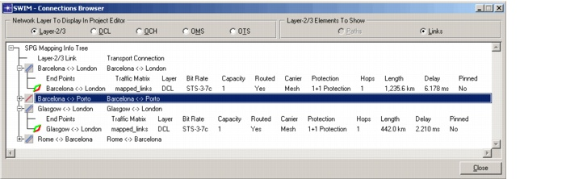
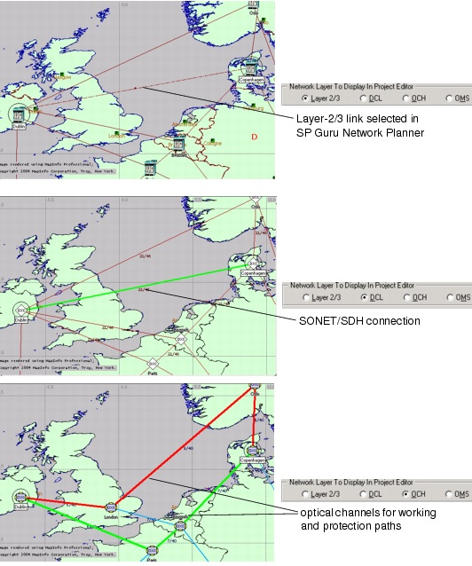

Mapping Layer-2/3 Links to Transport Connections > Mapped Connections Browser
Mapped Connections Browser
SWIM includes a Mapped Connections Browser that shows the status of mapped Layer-2/3 links and their corresponding Transport connections across different network layers.To open the Mapped Connections Browser, choose one of the following menu items in SP Guru Network Planner:
- SWIM > Open Mapped Connections Browser—View the status of all mapped Layer-2/3 links and the Transport connections that support those links.
- SWIM > Open Mapped Connections Browser for Selection—Same as the previous menu item, but shows only mapped links that are selected in the Project Editor (instead of all mapped links).
For more information, see Table 5-3-Mapped Connections Browser and Table 5-4-Icons Used in the Mapped Connections Browser .
Figure 5-3 Mapped Connections Browser

In addition to showing details about specific connections, the Mapped Connections Browser is also useful for visualizing the network paths taken by a connection at different network layers. Using the "Network Layer to Display in Project Editor" radio buttons, you can see the paths used to support a connection at different network layers in SP Guru Transport Planner.
Figure 5-4 Viewing a Connection at Different Layers Using the Mapped Connections Browser

- The traffic matrix, layer, bit rate, and endpoints of the connection
- Capacity—The capacity (number of units) of the connection
- Routed—Yes if the connection is routed, No if not. In Failure Analysis (SP Guru Transport Planner) mode, this field also indicates whether the connection is Lost or Recovered.
- Carrier—Whether the connection was carried on Mesh, Ring, Ring & Mesh or Partial (that is, partly on rings (routed), partly on mesh (unrouted)). For more information, see Ring Design .
- The protection type
- The number of hops of the path(s)
- The length (in km or miles) of the path(s)
- The end-to-end delay of the connection
- Pinned—Yes if the connection is pinned, No if not
For descriptions of the icons used in this treeview, see Table 5-4-Icons Used in the Mapped Connections Browser of this manual and Table 4-10-Connection Browser: Treeview.
| Home © 1987-2007 OPNET Technologies, Inc. All Rights Reserved. This software may be covered by one or more U.S. Patents. See complete patent notice in the Legal Notices section. OPNET Support Center |